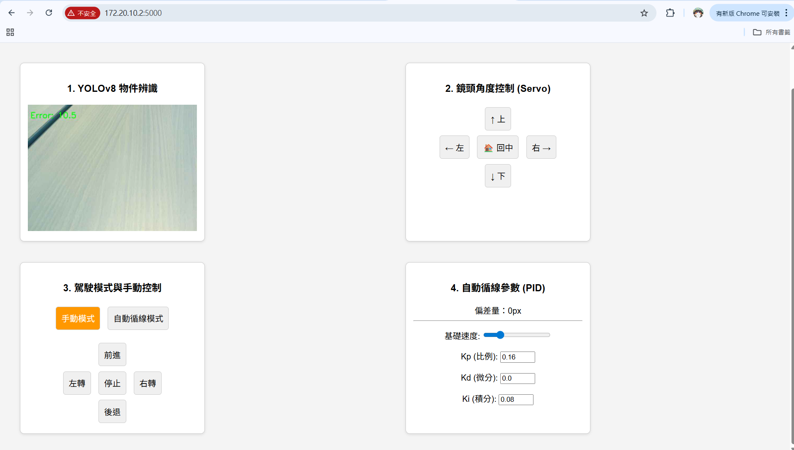

組員：I4A31 李牧鴻 / I4A32 郭妍妮
系統遵循「感知、判斷、控制」三部曲，透過 OpenCV 實現精準路況分析：
HLS 色彩空間，精準鎖定白線的高亮度與低飽和度特徵。lane_width 推算虛擬中線。針對實體車輛的物理慣性，我們實作了精密的控制補償：
在本次專案中，我們深刻體會到「理想的演算法必須與充滿變數的物理世界妥協」。在電腦螢幕上完美的 OpenCV 車道辨識，一放到八樓實體賽道上，立刻面臨嚴重的木地板反光問題。我們發現單純的灰階二值化完全失效，最終必須導入 HLS 色彩空間 過濾高飽和度的木頭反光，並結合 輪廓面積 (Contour Area) 剔除碎亮斑，才成功讓視覺感知層穩定下來。
課堂上學到的 PID 公式在實作時，我們遇到了嚴重的「S型蛇行」與「轉彎爆衝」現象。我們發現，這不僅是 Kp/Kd 參數的比例問題，更牽涉到硬體馬達的反應延遲。為此，我們在標準 PID 外加入了工程上的解法：導入 Deadzone (死區) 讓車輛在誤差極小的時候「放過自己」保持直行，並加上 Clamping (限幅) 保護機制，確保算出的極端轉向數值不會導致馬達失控。這些都是純理論無法學到的寶貴調機經驗。
當我們試圖將 Flask 網頁伺服器、YOLOv8 物件偵測與 PCA9685 馬達控制同時運行在 Raspberry Pi 5 上時，系統發生了頻繁的當機。經過除錯，我們發現原因來自於 I2C 匯流排的通訊衝突以及 CPU 資源耗盡。我們透過加入 threading.Lock() 來保護 I2C 通訊，並採用「跳幀處理 (Skip Frames)」策略，讓 YOLO 每 10 幀才進行一次推論。這讓我們學到了在邊緣運算 (Edge Computing) 設備上，妥善管理系統資源與執行緒同步的重要性。
在 Troubleshooting 的過程中，AI 工具成為了我們強大的副駕駛 (Copilot)。不論是解析 I2C 通訊當機的錯誤碼、提供 Web UI 的前端切版建議，或是協助我們將抽象的控制邏輯轉換為精煉的 Python 程式碼，AI 都大幅縮短了我們在語法除錯上耗費的時間，讓我們能將精力專注於「演算法邏輯設計」與「實體參數調校」的核心工程上。
我們基於 Flask 開發了即時監控與遙控儀表板，將感知、判斷與控制整合於單一介面，具備以下核心功能：

▲ 整合影像辨識與 PID 參數調整的 Web UI 介面
在開發過程中，面對硬體底層報錯與演算法瓶頸，我們積極運用 Gemini 作為強大的開發助教，解決了以下關鍵技術難題：
Gemini 協助：
精準分析出 Flask 多執行緒搶佔 I2C 資源的問題，引導我們在馬達控制中加入 threading.Lock() 進行保護，成功穩定系統。
Gemini 協助：
面對 Web 影像嚴重卡頓，建議採用「降解析度 (imgsz=160)」與「跳幀推論」策略，讓 RPi 5 能順暢完成自駕與物件辨識。
Gemini 協助：
針對直線上不斷 S 型擺動的問題，解析 Kp/Kd 物理意義，並協助加入 Deadzone (死區) 與 Clamping (限幅) 邏輯。